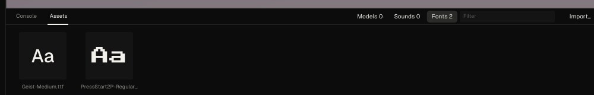
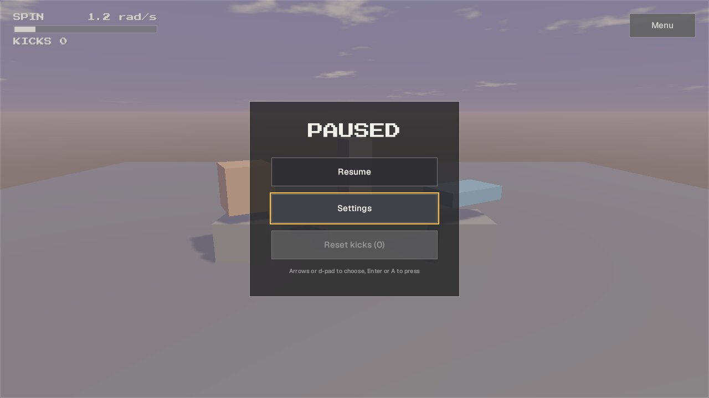
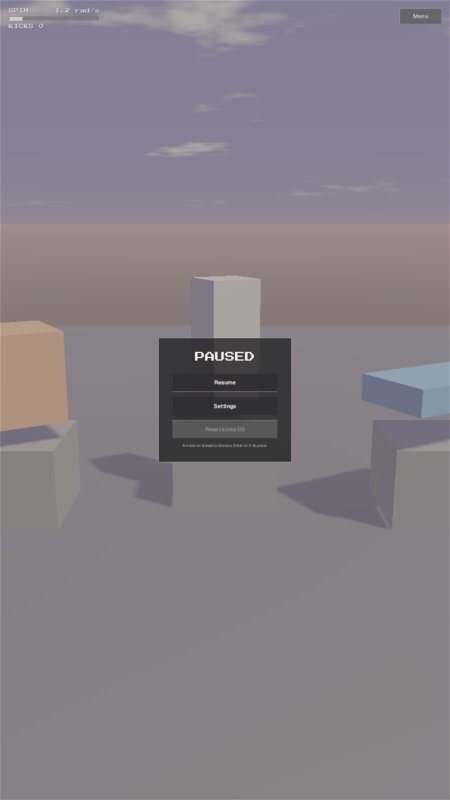
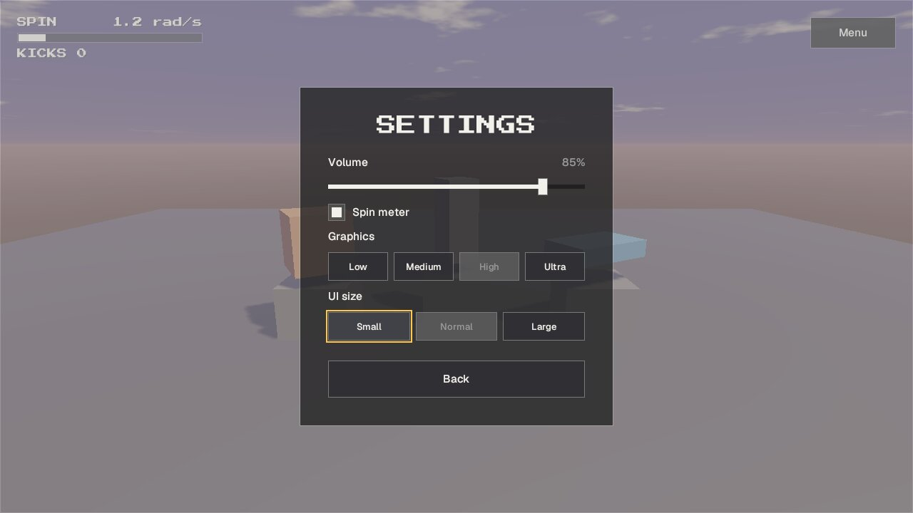
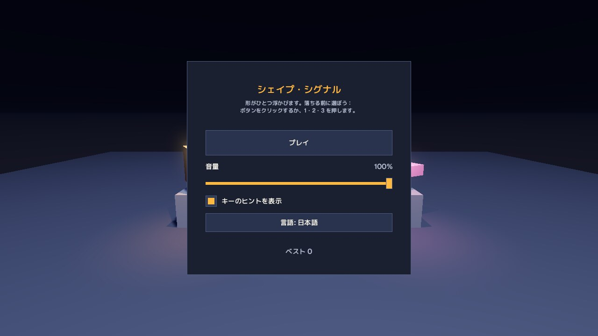
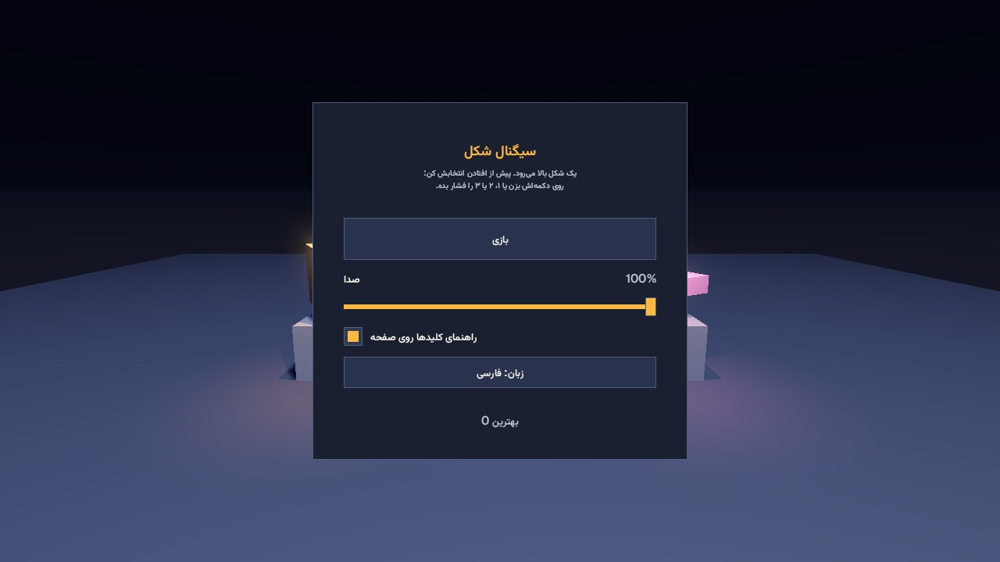

Scripting in Oberon
You write gameplay as behaviour scripts. A behaviour script is a Python file with up to three functions, and you attach it to an entity. Oberon calls those functions while the scene plays.
# scripts/spinner.py
SPEED = 1.5 # radians per second
def start(entity, ctx):
entity.state["turns"] = 0
print(f"{entity.name} is spinning")
def update(entity, ctx):
x, y, z = entity.transform.rotation_euler
entity.transform.rotation_euler = (x, y + SPEED * ctx.time.delta, z)
def stop(entity, ctx):
print("stopped")All three functions are optional.
start(entity, ctx)runs once, on the entity's first Play frame.update(entity, ctx)runs every frame.stop(entity, ctx)runs when you press Stop.
Types and completion#
Add type hints, and your editor knows the whole API. Typing ctx. lists
everything with its documentation, and a misspelt entity.animaton is
underlined before you press Play:
from __future__ import annotations
from typing import TYPE_CHECKING
if TYPE_CHECKING: # types for your editor; nothing is imported when it runs
from automata.script_api import Context, Entity
def update(entity: Entity, ctx: Context) -> None:
entity.character_velocity = (ctx.input.axis("a", "d") * 5.0, 0.0, 0.0)New scripts from Oberon, and projects from
oberon new, start like this. The types come from
automata.script_api, which ships with the engine. Projects made by
oberon new have it in .venv, together with the basedpyright language
server, so VS Code, PyCharm and Oberon's code editor
complete and check scripts with no setup.
Members that can be missing are typed Optional. For example,
entity.animation is None without an Animator:
if entity.animation is not None:
entity.animation.play("Run")pyrightconfig.json in new projects reports unguarded uses as warnings.
Attach a script#
- Inspector → Add Component → Script…, or right-click an entity → Attach Script….
- Pick an existing
.pyfile or type a new name. A new file starts from a template: a small character controller with a cheat-sheet docstring. - The script path is saved relative to the scene file. You can move the project folder and the link still works.
Several entities can share one script. Each entity gets its own entity
handle and its own entity.state.
The frame model#
Every frame, Oberon sends the scene state to the Python runner. The runner calls every script, and the scripts' changes come back and apply before the frame renders. Two rules follow from this:
- Reads see the start of the frame, plus every write made earlier in the same frame, by any script. All scripts share one handle per entity.
- Writes reach the simulation after all scripts have run. Physics, rendering and sound see the frame's final values. If two scripts set the same value, the last one wins.
So when four drones each run
ctx.scene["Player"].attributes["health"] -= 5 in one frame, the player
loses 20 health, not 5. A despawn also lands at the end of the frame:
other scripts can still find the entity until then.
run_scene follows the same rules, because both runners use the same code
for entity and ctx.
entity#
| Member | Meaning |
|---|---|
entity.name, entity.id | Name from the hierarchy; stable numeric id |
entity.transform.position | (x, y, z). Read it, or assign a tuple |
entity.transform.rotation_euler | (x, y, z) in radians (the Inspector shows degrees) |
entity.transform.scale | (x, y, z) |
entity.transform.translate(d) / .rotate(d) | Add a delta to the position / rotation |
entity.character_velocity | Set it to move a Character Controller |
entity.grounded | True when a character is standing on something |
entity.attributes["key"] | Custom values from the Inspector; read and write like a dict |
entity.camera | The entity's camera, or None (Cameras) |
entity.audio.play() / .stop() | Start (or restart) / stop the entity's Audio Source (Audio) |
entity.audio.playing | Whether the Audio Source was playing at the start of the frame |
entity.animation.play("Running", loop=True, fade=0.2) | Blend to a clip of the entity's animated model over fade seconds. An unknown clip raises KeyError. Asking for the clip that's already playing does nothing, so it's safe every frame (Animation) |
entity.animation.stop(fade=0) | Blend back to the rest pose |
entity.animation.clip / .time / .playing / .clips | The current clip, seconds into it (assign to jump), whether it's playing (False once a one-shot ends), and every clip name. .speed and .root_motion can be set too |
entity.animation.set("speed", 3.0) / .trigger("jump") | Steer the entity's animation graph: set a parameter, or fire a trigger. Unknown names raise KeyError, the wrong kind TypeError |
entity.animation.state / .layer_state("Arms") / .get("speed") | Where the graph is (its first layer's state, or another layer's) and a parameter's value. Also .parameters, .layers, .in_transition, .state_time, .graph (assign a path to switch graphs) and .play_state("Dance", layer=None, fade=0.2) |
entity.animation.look_at(target) / .reach("Palm2.R", target) | Turn the head towards, or reach a hand for, an entity, a name or a point; None stops. .foot_ik plants the feet on the ground (Attachments & IK) |
entity.attach("Robot", "Head", position=…) / .detach() / .attached_to | Follow a bone of another entity (a sword picked up into a hand), or let go (Attachments & IK) |
entity.nav.go("Player") / .stop() / .arrived / .path | Send a Nav Agent somewhere (a point, an entity or a name); it finds the way round walls and takes the jumps (Navigation) |
entity.ragdoll.on(push=(0, 50, -300)) / .off() / .resting / .hips | Make a character go limp (with a shove), and stand it back up where it fell once it has come to rest (Ragdolls) |
ctx.nav.path(a, b) / .nearest(p) / .reachable(a, b) | Ask the navigation mesh for the shortest walkable way (Navigation) |
ctx.ai.can_see(entity, "Player") / ctx.ai.hear(entity) | Sight (a cone, blocked by walls) and hearing (noises made with ctx.ai.noise) (AI) |
ctx.ai.state_machine({...}) / ctx.ai.selector(...) | State machines and behaviour trees for enemy brains (AI) |
entity.joint | The entity's Joint while it runs, or None: .angle, .value, .force, .attached, .broken; set .motor_target, .motor_speed, .limits, .enabled, .connected. on_joint_broken(entity, ctx) runs when it snaps (Physics → Joints) |
entity.despawn() | Remove the entity until Play stops |
entity.state | A dict of your own that persists between frames (not saved) |
ctx#
| Member | Meaning |
|---|---|
ctx.time.delta | Seconds since the last frame (multiply speeds by it) |
ctx.time.elapsed, ctx.time.frame | Seconds since Play started; frame number, starting at 1 |
ctx.input.pressed("w") | Key held down |
ctx.input.just_pressed("space") | Pressed this frame |
ctx.input.just_released("e") | Released this frame |
ctx.input.axis("a", "d") | −1, 0, or 1 from two keys; in between when a touch stick holds them |
ctx.input.pressed("jump") | All of the above also take an action bound with ctx.settings.bind (Settings) |
ctx.input.any_just_pressed() | The key that went down this frame ("k", "mouse_left"), or None. Use it for "press a key" screens |
ctx.input.mouse_delta | (dx, dy) mouse movement in pixels since last frame; +y is down |
ctx.input.mouse_pressed("left") | Mouse button held ("left", "right", "middle"); also mouse_just_pressed and mouse_just_released |
ctx.input.lock_mouse(True) | Hide and capture the cursor for mouse look. False frees it, and Stop always frees it |
ctx.input.touch_controls | On-screen sticks and buttons that hold keys on phones (Touch controls) |
ctx.input.mouse_locked | Whether the cursor is captured |
ctx.input.mouse_position | (x, y) cursor position in screen pixels from the top-left (like ctx.hud), or None when the cursor is outside the game view or captured |
ctx.input.mouse_over_ui | Whether the cursor is over ctx.ui |
ctx.input.touches | The fingers on a touch screen, in the order they landed, as Touches with finger (0 for the first, and it keeps its number while it's down), position and start in screen pixels, moved, just_started, just_ended (its last frame in the list) and primary (the finger that also works as the left mouse button). On a computer the held left mouse button is finger 0, so touch controls can be tried with a mouse. A finger that lands on ctx.ui belongs to the UI and isn't listed |
ctx.physics.grounded(entity) | Same as entity.grounded |
ctx.physics.raycast(origin, direction, max_distance=100, ignore=None) | The first collider along a ray, or None. Returns a Hit with .entity, .point, .normal and .distance. ignore skips one entity, usually the caster. Sensors are skipped |
ctx.physics.water_height(x, z) | Height of the water surface at a world point, waves included, or None where there's no water |
ctx.water.height(x, z) | The same |
ctx.water.splash(position, strength=1.0) | A splash at a point or an entity: rings spread out and foam gathers. strength runs from 0 to 10; 1 is about a crate dropped from a couple of metres. Things that fall in or move through water make their own ripples, and hard landings splash |
ctx.particles.burst("sparks", position, direction=None, count=None, **fields) | A one-off particle effect at a point or an entity that cleans up after itself: "fire", "smoke", "sparks", "dust", "splash", "magic" or "motes", with any field changed (color=(0.3, 1, 0.4, 1)). direction aims it, for example along a hit's normal. count is how many particles. See Particles |
ctx.particles.emit(entity, count) | Extra particles from the entity's own Particle Emitter |
ctx.audio.play("sounds/hit.ogg", volume=1, pitch=1, position=None) | Play a sound once. With a position (a point or an entity) it fades with distance |
ctx.hud.image("sprites/crosshair.png", x, y, size=None, color=(1,1,1,1)) | Draw an image this frame, centred on (x, y) in screen pixels. "builtin:circle" and "builtin:ring" are a white disc and ring to tint with color |
ctx.hud.rect(x, y, width, height, color) | Draw a filled rectangle this frame, centred on (x, y) |
ctx.hud.text("100%", x, y, size=24, color=(1,1,1,1), align="left", shadow=None, outline=None, font=None) | Draw text this frame, in the built-in font or a font file (see below) |
ctx.hud.size, ctx.hud.center | The game view's size in pixels, and its centre |
ctx.ui.button("Play", x, y) and friends | Buttons, labels, toggles, sliders, progress bars, panels and images (Game UI) |
ctx.scene["Name"] | Another entity by name (raises KeyError if missing) |
ctx.scene.find("Name") | The same, but returns None if missing |
ctx.scene.by_id(id) | An entity by id (as in hit.entity.id), or None |
"Name" in ctx.scene | Whether an entity has that name |
for e in ctx.scene: | Every entity |
ctx.camera | The camera Play renders through, or None |
ctx.get(key), ctx.set(key, value), ctx.scan(pattern), ctx.keys(pattern), ctx.ref(key) | Other entities' state by key, like "Player:attr:health" (Keys) |
ctx.subscribe(pattern, fn), ctx.unsubscribe(...), ctx.publish(channel, data) | Channels: animation events and your own messages (Channels) |
ctx.tween(entity, "position", to, seconds, ease="out_cubic"), ctx.tween_value(start, end, seconds) | Move a value smoothly over time (Tweens and timers) |
ctx.after(seconds, fn, *args), ctx.every(seconds, fn, *args, times=None) | Call a function later, or again and again (Tweens and timers) |
ctx.ease("out_back", t) | t (0 to 1) through an easing curve |
ctx.save["coins"] = 12 | Values that last between runs, in save slots (Save games) |
ctx.settings.volume, .graphics, .bind("jump", "space") | The player's settings, remembered automatically (Settings) |
ctx.tr("menu.play"), ctx.tr("hud.coins", count=3) | Text in the player's language from lang/*.csv (Languages) |
ctx.log(...), ctx.warn(...) | Write to the Console. print() works too |
HUD shapes last one frame, so draw them in update every frame you want
them shown. Image paths are relative to the scene folder. Each call draws on
top of the previous one.
Text uses the built-in font (Geist Medium) unless you give font=
(Fonts):
sizeis the line height in pixels.alignsays wherexsits on each line:"left"(its left edge),"center"or"right".yis the vertical centre, and\nstarts a new line.shadowandoutlinetake a colour, orTruefor a translucent black shadow or a solid black outline.
ctx.hud.text(f"{health}%", 290, ctx.hud.size[1] - 48, size=26, shadow=True)
ctx.hud.text("ARENA CLEAR", *ctx.hud.center, size=56, align="center", outline=True)Text looks the same in Play and in the exported game, because both draw it
with the engine's own glyph atlas. Under run_scene,
ctx.screen.measure_text(text, size, font=None) returns the
(width, height) text will cover.
Fonts#
Put .ttf or .otf files in the project, usually in a fonts/ folder,
and name one with font=. The path is relative to the scene's folder,
like image paths:
PIXEL = "fonts/PressStart2P-Regular.ttf"
ctx.hud.text(f"SCORE {score}", 24, 24, size=16, font=PIXEL)
ctx.ui.label("PAUSED", x, y, size=28, align="center", font=PIXEL)
ctx.ui.theme.font = PIXEL # every widget's text from now on- Getting fonts in: drop font files on Oberon's window, or use
Import… in the Assets tab with Fonts chosen (also under
GameObject ▸ Import Font…). Each file is copied into
fonts/, and the path to write in scripts is put on the clipboard. Double-click a font in the Assets tab to copy its path again. - Missing characters (accents, symbols a pixel font lacks) are drawn with the built-in font, so text never shows empty boxes. For scripts the built-in font lacks too (Japanese, Chinese, Korean, Greek, Arabic…), give the language a font in its string table and it's used next (Languages). A character no font has is reported once in the Console.
- Mistakes:
font=must be a string ending in.ttfor.otf(otherwiseTypeErrororValueError). A file that's missing or isn't a font is reported once in the Console, and the text is drawn in the built-in font.measure_textraisesValueErrorfor it instead. - Export looks through the scripts that ship for strings ending in
.ttfor.otf. It warns if a font is missing, isn't a font, sits outside the project, or is excluded from the build. The build still goes ahead, because that text falls back to the built-in font. A script's font can be named relative to the start scene's folder or any folder the script sits in, so a demo kept in a subfolder (with its ownfonts/) is fine. Paths built at runtime (f-strings) can't be checked. Docstrings and other triple-quoted text, comments, test scripts (tests/,test_*.py) and installed packages are skipped, so a font named only as an example doesn't stop the build. - Licences: most free fonts (such as the SIL Open Font License ones on Google Fonts) may ship inside games. Keep the licence file next to the font.

Key names are lowercase: "a"–"z", "0"–"9", "space",
"enter", "escape", "tab", "backspace", the arrows "arrow_left",
"arrow_right", "arrow_up" and "arrow_down" (or just "left",
"right", "up", "down"), and "shift" / "ctrl" / "alt". The last
three match either side of the keyboard; use "shift_left" or
"shift_right" (and likewise for ctrl, alt and "super_left" /
"super_right") to require one side. Also: "f1"–"f12", "home",
"end", "page_up", "page_down", "insert", "delete", punctuation by
name ("minus", "equal", "comma", "period", "slash",
"backslash", "semicolon", "quote", "backquote", "bracket_left",
"bracket_right"), the numpad ("numpad_0"–"numpad_9", "numpad_add",
"numpad_subtract", "numpad_multiply", "numpad_divide",
"numpad_decimal", "numpad_enter"), the locks ("caps_lock",
"num_lock", "scroll_lock"), "print_screen", "pause",
"context_menu", and "back_button": Android's Back. at.Key has them
all.
Gamepad buttons are key names too, on any connected pad: "pad_south",
"pad_east", "pad_west" and "pad_north" (A, B, X and Y on an Xbox pad),
"pad_up", "pad_down", "pad_left" and "pad_right" (the d-pad, or the
left stick pushed past halfway), "pad_start", "pad_select", the
shoulders "pad_lb" / "pad_rb", the triggers "pad_lt" / "pad_rt",
and the stick clicks "pad_l3" / "pad_r3". Bind them like keys
(ctx.settings.bind("jump", "space", "pad_south")). They work in Play,
under run_scene with the engine and in exported games.
Game UI#
ctx.ui draws menus and HUD widgets over the game: buttons, labels,
toggles, sliders, progress bars, panels and images. Call them in update
every frame they should show (immediate mode). There are no widget objects
to create or remove: whatever you call this frame is the UI.

def update(entity, ctx):
ui = ctx.ui
s = entity.state
ui.panel(20, 20, 260, 220, title="Options")
if ui.button("Restart", 40, 70, 220, 44):
ctx.publish("restart")
s["music"] = ui.toggle("Music", s.get("music", True), 40, 130)
ctx.settings.volume = ui.slider(ctx.settings.volume, 40, 180, 220, step=0.05)
ui.progress(s.get("health", 80), 20, 260, 260, max=100, text=True)| Widget | What it does |
|---|---|
ui.button(text, x, y, width=160, height=44, *, id=None, enabled=True, size=None) | Returns True on the frame it's clicked: pressed and released on it. Sliding off before letting go cancels |
ui.toggle(text, value, x, y, *, id=None, enabled=True, size=None) | A check box with its label. Returns the new value, flipped when the box or the text is clicked |
ui.slider(value, x, y, width=200, height=24, *, min=0, max=1, step=None, id=None, enabled=True) | Drag the knob, or press anywhere on the track. Returns the new value, rounded to step if given |
ui.progress(value, x, y, width=200, height=18, *, max=1, color=None, text=None) | A bar filled to value / max. text is drawn on it, and True shows the percentage |
ui.label(text, x, y, size=None, color=None, align="left", shadow=None, font=None) | Text with its top at y. align says where x is, like ctx.hud.text. font defaults to ui.theme.font |
ui.panel(x, y, width, height, *, color=None, title=None) | A background box. Clicks on it belong to the UI too |
ui.image(path, x, y, width, height, color=(1,1,1,1)) | An image stretched over the box |
ui.mouse_over | The same as ctx.input.mouse_over_ui |
ui.theme | Colours, the default text size and font (below) |
Rules that apply to every widget:
- Position:
x, yis the top-left corner in UI units (screen pixels unless you set a design size), unlikectx.hudshapes, which are placed by their centre. Inside a layout leavex, yout, along with the size if the layout gives one. - States: buttons show hover and pressed states.
enabled=Falsedims a widget and ignores clicks on it. - Clicks stay with the UI: a press that starts on a widget or a panel
is the UI's until it's released.
ctx.input.mouse_pressed,mouse_just_pressedand actions bound to mouse buttons don't see it, so a click on a button never also fires the gun. The UI decides from where things were drawn the frame before, so a widget takes clicks from the second frame it's shown. - Keys and gamepads: see focus.
- Identity: widgets are told apart by their text and the entity whose
script draws them. Give
id=when the text changes (f"Reset ({n})") or two widgets share the same text. - Touch: in the exported game, the first finger down on a touch screen acts as the left mouse button wherever it touches. Taps press buttons and drags move sliders.
ctx.ui.theme holds the colours. The default is monochrome, like Oberon:
paper-white text and fills on dark, translucent panels. Colours are RGBA
from 0 to 1, as a paint program shows them. Change any of them at any time:
ctx.ui.theme.accent = (1.0, 0.75, 0.2, 1.0) # fills: sliders, bars, toggles
ctx.ui.theme.button = (0.1, 0.12, 0.2, 0.95) # also hover, press, panel, text, text_dim, track, border
ctx.ui.theme.text_size = 24
ctx.ui.theme.font = "fonts/Pixel.ttf" # None: the built-in font
ctx.ui.theme.focus = (1.0, 0.78, 0.3, 1.0) # the keyboard focus ringLayouts#
Columns, rows and stacks place the widgets drawn inside them, so you don't
work out coordinates. They're with blocks and they nest:
def update(entity, ctx):
ui = ctx.ui
with ui.column(width=380, anchor="center", padding=40, gap=14, panel=True):
ui.label("PAUSED", size=28, align="center")
if ui.button("Resume", height=52):
ui.screens.clear()
with ui.row(columns=3, height=40, gap=8): # three equal buttons
for preset in ("low", "medium", "high"):
if ui.button(preset.title()):
ctx.settings.graphics = preset| Layout | Places widgets |
|---|---|
ui.column(x=None, y=None, width=None, height=None, *, gap=10, padding=0, anchor=None, margin=0, panel=False, title=None, id=None) | Top to bottom. With a width, each widget fills it |
ui.row(..., columns=None, ...) | Left to right. With columns=n and a width (given, or from the layout around it), each widget gets an equal share |
ui.stack(...) | On top of each other: an image with a label over it |
- Where: give
x, y, or ananchor(below) with amargin, or neither inside another layout to take its next slot. A layout without a size grows to fit what's in it. - Sizes: a widget's own
widthandheightstill apply. A button without one fills the column's width. panel=Truedraws a panel behind everything in the layout (or pass a colour), andtitle=adds a title to it.paddingis the space inside it.- Mistakes raise errors: an
xwithout ay, orcolumns=0.
Scaling to any screen#
Anchors put things against the screen's edges and corners:
"top_left", "top", "top_right", "left", "center", "right",
"bottom_left", "bottom" and "bottom_right". Layouts take
anchor=, and ui.place(anchor, width, height, margin=0) returns the
top-left corner of a box anchored that way, for a single widget:
ui.button("Menu", *ui.place("top_right", 120, 44, margin=24), 120, 44)An anchored layout uses its size from the frame before, then moves into
place when the with block ends, so it's right on its first frame too.
Design size. Set ui.design_size = (1280, 720) once and lay the UI
out for that screen. It scales to fit whatever window or phone the game
runs on: ui.scale is the smaller of the width and height ratios. All
ctx.ui positions and sizes are in these UI units, and so are
ui.size (the screen, in UI units) and ui.mouse_position. Without a
design size, one unit is one pixel.
The player can make the UI bigger or smaller with
ctx.settings.ui_scale (0.5 to 3, 1 by default), which multiplies the
scale and is saved with the other settings. Use it for
high-DPI screens and phones.

Screens#
ctx.ui.screens keeps track of which menus are open, as a stack: the
pause menu, a settings screen over it, an inventory.
def start(entity, ctx):
ctx.settings.bind("pause", "p", "escape", "pad_start")
def update(entity, ctx):
ui = ctx.ui
if ctx.input.just_pressed("pause") and not ui.screens.top:
ui.screens.show("pause", pause=True)
if ui.screen("pause"): # True while it's shown
with ui.column(width=300, anchor="center", panel=True):
if ui.button("Resume"):
ui.screens.hide("pause")
if ui.button("Settings"):
ui.screens.show("settings")
if ui.screen("settings"):
...show(name, *, modal=True, pause=False, escape=True) | Opens a screen on top (or moves it there) |
hide(name), toggle(name, **options), back(), clear() | Close one, flip one, close the top one, close them all |
shown(name), top, names, modal | Is it open, the top one, all of them bottom to top, and the top modal one |
paused | A screen shown with pause=True is open |
- Widgets belong to a screen:
ui.screen(name)returns whether it's shown, and the widgets drawn after it belong to it. They draw above the screens under it, whatever order the scripts run in.ui.screen(None)goes back to the plain HUD. - Modal screens (the default) take all the input: widgets under them draw but don't react, and clicks on them never reach the game.
- Pausing:
pausedis a flag your game scripts check (if ctx.ui.screens.paused: return). It doesn't stop physics. - Escape, or B (
"pad_east") on a gamepad, closes the top screen, and the script doesn't see that press. Show a screen withescape=Falseto keep it open; then the script gets Escape as usual. With no screen open, Escape is the game's, so it can open the pause menu.
Keyboard and gamepad focus#
While a modal screen is open, the arrow keys and the gamepad's d-pad (or
left stick) move a focus ring to the nearest widget in that direction.
Enter, Space or A ("pad_south") presses the focused widget,
and left and right move a focused slider by its step (or a twentieth of
its range). Tab and Shift+Tab go through the widgets in order. A
held direction repeats.
- A screen opened from the keyboard or a gamepad focuses its first widget. The mouse still works, and a click hides the ring.
- Outside screens, set
ui.keyboard_navigation = Trueto get focus in the HUD too.ui.focusedis the focused widget's id, or None. - Keys the UI uses are hidden from
ctx.inputuntil they're released, so Enter on a menu button doesn't also make the player jump.
ctx.ui works the same way in Play, under run_scene and in exported games.
examples/oberon/pause_menu is a complete pause menu, built from anchored
columns and rows and laid out for 1280×720. It has a menu screen and a
settings screen that changes ctx.settings (volume, graphics preset, UI
size and a toggle of its own). Both work with the mouse, the keyboard or a
gamepad. There's also a HUD with a spin meter and a Menu button, and
shapes that turn faster when you click in the game but not when you click
the UI. Its titles and HUD numbers use a pixel font from its fonts/
folder.

UI documents#
Screens and HUDs can also be made in Oberon's UI editor
instead of in code. Each is a ui/<name>.ui.ron document in the project.
The game draws it, with its own theme and design size: a HUD document from
the start, under every screen, and any other document while its screen is
shown. Scripts reach its widgets by the names given in the editor:
def update(entity, ctx):
hud = ctx.ui.screen("hud") # ui/hud.ui.ron
hud.set("score", f"SCORE {entity.state['score']}")
hud.set("health", entity.attributes["health"])
if hud.clicked("menu"):
ctx.ui.screens.show("pause") # ui/pause.ui.ron, with its own options
pause = ctx.ui.screen("pause")
if pause.changed("volume"):
ctx.settings.volume = pause.get("volume")ctx.ui.screen(name) | |
|---|---|
set(widget, value) | A label's or button's text, a progress bar's or slider's value, a toggle's state, an image's file |
get(widget) | Its value now: what set gave it, or what the player chose |
clicked(widget) | The button was clicked (or the toggle or slider used) the last time the document drew |
changed(widget) | The player changed the slider or toggle the last time it drew |
set_visible(widget, visible=True), set_enabled(widget, enabled=True) | Show or hide a widget (a column, row or stack hides its children too), and enable or dim one |
visible | Whether the screen shows; set a HUD document's to False to hide it |
widgets, document, name | Its widget names, its UiDocument, and its name |
- Names are checked. A widget name that isn't in the document raises
KeyErrorwith the closest match (`ui/hud.ui.ron has no widget named 'scroe'; did you mean 'score'?`). A value of the wrong type raisesTypeError('health' is a progress: set it to a number). A screen with no document raisesLookupErroras soon as yousetorclicked. - Clicks arrive a frame later, like any widget's: the document draws
after every script's
update, soclickedreports the click made when it was last drawn. - Screens:
ctx.ui.screens.show("pause")takes the document's Modal, Pause and Escape settings unless the call passes its own. Keys, gamepads and focus work as on any screen. - Hot reload: saving a document in Oberon redraws it in the running game within half a second. A broken document is reported once in the Console, and the others keep drawing.
- Mixing:
ui.screen(name)is still truthy while the screen is shown, so a script can draw extra widgets onto a document's screen withif ui.screen("pause"): ....
examples/oberon/shape_signal is a game whose title screen, HUD and
results screen are all documents. Its script only calls set, clicked
and changed.
Keys#
Scripts can read and write any entity's state with a key, Redis style.
A key is entity:component:field:
ctx.get("Player:animation:clip") # "Run"
ctx.set("Player:animation:speed", 1.5)
ctx.get("Player:attr:health") # its attributes
ctx.set("Door:transform:position", (0, 3, 0))
for anim in ctx.scan("Enemy_*:animation"): # every enemy that has one
anim.play("Dance", fade=0.3)
ctx.scan("Enemy_*:attr:health") # [30, 12, 50]
ctx.keys("Player:attr:*") # ["Player:attr:health", ...]| Component | Fields |
|---|---|
animation | clip (setting it plays that clip), time, speed, root_motion, graph; read-only playing, looping, duration, clips, springs, state |
transform | position, rotation (radians, same as rotation_euler), scale |
joint | motor_speed, motor_target, limits, enabled, connected, break_force; read-only angle, value, force, attached, broken, kind |
attr | The entity's attributes, by name |
A shorter key gives more: "Player:animation" is the same handle as
entity.animation, and "Player" is the entity. Reads and writes follow
the frame model, like everything else.
get,setandreftake one exact key. If two entities share the name,getraises an error instead of guessing.scanreturns every match, in hierarchy order. It skips entities that lack the component or field, and accepts*and?wildcards.A wrong key raises
KeyErrorand suggests the nearest right one: `'Player:animaton:clip': there's no component 'animaton'; did you mean 'animation'?. Read-only fields raiseAttributeError.set` won't create attributes, so a typo can't make a new one; add them withentity.attributes["mana"] = 10.ctx.ref(key)makes a handle to keep, usually fromstart. It looks the key up again each time it's used, so it always shows this frame's values:def start(entity, ctx): entity.state["boss"] = ctx.ref("Boss:animation") entity.state["hp"] = ctx.ref("Boss:attr:health") def update(entity, ctx): if entity.state["hp"].value < 20: entity.state["boss"].play("Enraged", fade=0.2)
- Names: keys find entities by name, so entity names can't contain
:. Oberon refuses the rename, andat.Entity("a:b")raisesValueError. When several entities share a name, the Inspector says so under the name.entity.animation.play(...)is still the everyday way to drive your own entity. Keys are for reaching the others.
Channels#
ctx.subscribe(pattern, fn) calls fn(msg) for every message published
on a matching channel. A pattern is an exact name or uses * and ?.
Animation events arrive on their own, as <entity>:animation:<event>
(see Animation events), and scripts can
publish their own messages:
def opened(msg):
msg.ctx.log("door opened by", msg.data)
def start(entity, ctx):
ctx.subscribe("door:*", opened)
ctx.subscribe("*:animation:footstep", lambda msg: msg.ctx.audio.play("step.ogg", position=msg.entity))
# elsewhere
ctx.publish("door:open", "Player")msg has channel, data and ctx. Animation events also set entity,
event and clip. publish delivers at once and returns how many
subscribers got the message.
Subscribing the same function to the same pattern again does nothing, so
it's safe in update. A subscription ends when the entity whose script
made it goes away. You can also end one with ctx.unsubscribe(pattern) or
by calling cancel() on what subscribe returned. If a subscriber raises,
its script pauses like any other script error.
Tweens and timers#
ctx.tween moves one of an entity's values to a target over some seconds,
along an easing curve. ctx.after and ctx.every call a function later.
Each returns a handle with cancel():
def start(entity, ctx):
door = ctx.scene["Door"]
ctx.tween(door, "position", (0, 3, 0), 1.5, ease="in_out_sine")
ctx.after(2.0, ctx.audio.play, "sounds/clunk.ogg")
entity.state["spawner"] = ctx.every(5.0, spawn_wave, ctx)
def collected(coin, ctx):
ctx.tween(coin, "scale", (0, 0, 0), 0.3, ease="in_back", on_done=coin.despawn)What a tween can move. "position", "rotation" (Euler angles in
radians) and "scale", or an attribute by name ("score"). Any writable
key field works as component:field, such as
"animation:speed" or "attr:glow". Numbers and tuples of numbers
tween. If both ends are whole numbers, the value stays whole, so a score
counts up 1, 2, 3.
ctx.tween(...) argument | Meaning |
|---|---|
entity | The entity, or its name |
field, to, duration | What moves, where to, and how many seconds it takes |
ease | A curve name (below) or your own function of t. Default "out_cubic": fast, then settling |
start= | Where it starts. Otherwise it starts from the value it has when it begins |
delay= | Seconds to wait before it starts |
loop= | True repeats it forever. A number plays it that many times |
yoyo= | Every other play runs backwards. yoyo=True, loop=True swings back and forth |
on_update=, on_done= | on_update(value) runs each frame it moves, and on_done() runs when it ends |
A Tween has value, progress (0 to 1) and done, plus cancel()
(stop where it is), finish() (jump to the end and call on_done),
pause() and resume(). Starting a tween on the same entity and field
replaces the old one, so a door told to close halfway through opening
turns round smoothly.
ctx.tween_value(start, end, seconds, on_update=None, ease=...) tweens a
value of your own. It's handy for fades, because HUD drawing happens every
frame:
def start(entity, ctx):
entity.state["fade"] = ctx.tween_value(1.0, 0.0, 1.2, ease="in_quad", delay=1.0)
def update(entity, ctx):
alpha = entity.state["fade"].value
ctx.hud.text("LEVEL 1", *ctx.hud.center, size=64, align="center", color=(1, 1, 1, alpha))Easing curves (31 of them, the standard set that
easings.net draws): "linear", plus in_, out_
and in_out_ versions of sine, quad, cubic, quart, quint,
expo, circ, back, elastic and bounce. in_ starts slow, out_
ends slow, and in_out_ does both. back overshoots a little and
elastic wobbles past the end. bounce bounces at the end. Spellings like
"easeOutCubic" work too, and a misspelt name gets a suggestion.
Timers. ctx.after(seconds, fn, *args) calls fn(*args) once.
ctx.every(seconds, fn, *args, times=None) calls it every seconds,
forever or times times. A Timer has remaining, count and done,
and cancel(), pause() and resume(). Make an every timer in start
or once on an event, not in update, or you'll start a new one each
frame. To repeat at random intervals, let the function book itself again,
like examples/oberon/campfire/scripts/crackle.py:
def pop(entity, ctx):
ctx.particles.emit(entity, random.randint(8, 20))
ctx.after(random.uniform(0.8, 3.0), pop, entity, ctx)When they run. Timers and tweens move once a frame by
ctx.time.delta. They run in the order they were made, after animation
events and before any update, so update already sees this frame's
tweened values. Something made during a frame starts counting the next
frame. After a long hitch, an every timer catches up, but at most 8
calls in one frame. Timers and tweens stop when the entity whose script
made them goes away, and a tween also stops when the entity it moves goes
away. They pause while their script is paused by an error, and Stop ends
them all. Functions they call follow hot reloads like subscribers do. If
one raises, its script pauses like any other script error.
Save games#
ctx.save is a dict that outlives the run. Put anything in it that a
player expects to find next time:
def start(entity, ctx):
if "checkpoint" in ctx.save:
entity.transform.position = ctx.save["checkpoint"]
def update(entity, ctx):
...
ctx.save["coins"] = ctx.save.get("coins", 0) + 1
ctx.save["inventory"].append("key") # changes inside lists count tooValues are JSON: numbers, strings,
True/False/None, and lists and dicts of those. Tuples come back as lists. Anything else, such as an entity or aNaN, raises an error when you assign it, so nothing bad reaches the file.Writing happens at the end of the frame, and only if something changed. Use
ctx.save.flush()to write now. Writes are atomic (a temp file, then a rename), so a crash can't leave half a save. A file that won't parse is renamed to….broken, a warning goes to the Console, and the slot starts empty.Slots. Everything goes to the slot named
"default"until you switch:ctx.save.use(2)/use("hard mode")Switch slots (the old one is written first). A new slot starts empty ctx.save.slotThe current slot's name ctx.save.slots()Saved slots: each has name,saved_at(time.time()seconds) andkeys(how many values). Use them for a load screenctx.save.exists(slot=None),ctx.save.saved_atWhether a slot was saved; when the current one was ctx.save.delete(slot=None),ctx.save.clear()Delete a slot's file; empty the current slot get,setdefault,pop,update,keys,items,in,len,delThe usual dict methods
Where the files go. Each slot is
saves/<slot>.jsonin the save folder:Running in Save folder Oberon's Play <project>/.oberon/save(delete it to start fresh)run_scene(...).oberon/savenext to the scene. Headless runs keep nothing unless you passsave_dir=An exported game A folder named after the game ( game.json'sname) in the player's user-data folder:%APPDATA%on Windows,~/Library/Application Supporton macOS,$XDG_DATA_HOMEor~/.local/shareon LinuxSetting the
AUTOMATA_SAVE_DIRenvironment variable overrides all of them..oberon/is never exported, so your test saves don't ship.
Player settings#
ctx.settings holds the player's settings. It's saved in the same folder
as settings.json, shared by every save slot, and applied as soon as the
game starts:
ctx.settings.volume = 0.5 | Master volume, 0 to 1 (1 by default) |
ctx.settings.graphics = "low" | Graphics preset: "low", "medium", "high", "ultra" or "beautiful". Until the player picks one, it reads as the preset the game is running at |
ctx.settings.ui_scale = 1.25 | How big ctx.ui draws, 0.5 to 3 (1 by default). See scaling |
ctx.settings.language = "ja" | The language ctx.tr gives text in. Until the player picks one, it's the computer's language if the string tables have it, else their first. See Languages |
ctx.settings["sensitivity"] = 0.4 | Any other setting, with the same JSON rules as ctx.save |
ctx.settings.reset() | Everything back to the game's defaults |
In Oberon's Play mode, the graphics setting overrides the editor's preset until you press Stop.
Key bindings. Name your controls as actions and give them default
keys in start. Then ask ctx.input about the action instead of a key:
def start(entity, ctx):
ctx.settings.bind("jump", "space")
ctx.settings.bind("fire", "mouse_left", "f")
def update(entity, ctx):
if ctx.input.just_pressed("jump"):
...A settings screen changes them with rebind. The change is saved, and it
wins over bind from then on:
def update(entity, ctx):
if entity.state.get("waiting"):
key = ctx.input.any_just_pressed()
if key and key != "escape":
ctx.settings.rebind("jump", key)
entity.state["waiting"] = False
return
if ctx.input.just_pressed("f1"):
entity.state["waiting"] = True
ctx.hud.text(f"Jump: {', '.join(ctx.settings.keys('jump'))}", 16, 16)bind(action, *keys) | Default keys: key names, gamepad buttons ("pad_south") or "mouse_left"/"mouse_right"/"mouse_middle". Binding again replaces the defaults |
rebind(action, *keys) | The player's keys, saved. With no keys, the action has none |
keys(action), bindings() | One action's keys now, or every action's |
reset_keys(action=None) | Back to the defaults (one action or all) |
A misspelt key ("spce") raises an error that suggests the right one. An
action name that was never bound is treated as a key name, so
ctx.input.pressed("space") keeps working.
Languages#

Put the words your game shows in string tables: CSV files in a lang/
folder next to the scene. The first column is a key, and each other
column is a language:
key,en,es,ja
@name,English,Español,日本語
@font,,,fonts/MPLUSRounded1c-Medium.ttf
# menus
menu.play,Play,Jugar,プレイ
hud.coins,Coins: {count},Monedas: {count},コイン: {count}
"menu.quit","Quit, now",Salir,終了Then ask for text by key:
ctx.ui.button(ctx.tr("menu.play"), x, y) # "Play", "Jugar", "プレイ"
ctx.hud.text(ctx.tr("hud.coins", count=coins), 16, 16)The file. Save it as UTF-8 from any spreadsheet app or text editor.
- The header names the languages with codes like
en,es,pt-BRorzh-Hans. The first one is the default. @namegives each language's name in itself, for a language menu.@fontgives a language a font for the characters other fonts lack.- Rows starting with
#, and blank rows, are skipped. A cell with a comma or a line break goes in "double quotes", and\nalso makes a line break. - Every
lang/*.csvfile is read, in name order, so you can split a big game intomenus.csv,dialogue.csvand so on. They needn't have the same columns.
ctx.tr(key, language=None, **values) gives the key's text in the
player's language. {name} placeholders are filled from the keyword
arguments, with Python's format rules ({score:,}, {time:.1f}).
Nothing in a table stops the game:
| What went wrong | What you see |
|---|---|
| The language's cell is empty | The first language's text, and a Console warning naming the file and line (lang/strings.csv:5: hud.coins has no ja text; using en) |
| The key isn't in any table | The key itself, and a warning that suggests a close one |
| A placeholder wasn't given | It's left as written (Coins: {count}), with a warning |
A duplicate key, an odd @ row, too many cells | A warning with the file and line; the first entry wins |
Each warning shows once. ctx.tr also has:
ctx.tr.languages | The language codes, in column order: ("en", "es", "ja") |
ctx.tr.language | The language text comes in now (the same as ctx.settings.language) |
ctx.tr.name("es") | "Español" (from @name; the code when there's none). No argument: the current language |
ctx.tr.font("ja") | The language's @font, or None |
ctx.tr.has("menu.play"), "menu.play" in ctx.tr | Whether a table has the key |
ctx.tr.keys("menu.") | The keys, sorted, optionally only those starting with a prefix |
Choosing the language. ctx.settings.language starts as the
computer's language when a table has it. es-MX finds es, and pt
finds pt-BR. Otherwise it's the first column. Setting it switches every
text at once and is saved with the other settings. A language the tables
don't have raises ValueError, listing the ones they do. A language
button can step through them:
if ctx.ui.button(ctx.tr("menu.language", name=ctx.tr.name()), x, y):
langs = ctx.tr.languages
ctx.settings.language = langs[(langs.index(ctx.tr.language) + 1) % len(langs)]UI documents translate themselves. When a label's, button's, toggle's
or progress bar's text, or a panel's title, is a key of the tables, the
player sees that key's text. Write menu.play as the Play button's text
in the UI editor; screen.get() still gives the key.
Text a script sets with screen.set() is translated the same way, so
set("verdict", "hud.miss") works, and so does
set("score", ctx.tr("hud.score", score=s)).
Fonts per language. Text in a language with an @font is drawn with
your font first and the language's font for the characters your font
lacks. The pixel title above is Press Start 2P in English and Spanish, and
its kana come from M+ Rounded in Japanese. Fonts for Chinese, Japanese and
Korean are large (3–20 MB). For a game with a fixed script, a subset
with only the characters you use keeps it small; Shape Signal's is 113 KB.
fontTools' pyftsubset makes one:
pyftsubset MPLUSRounded1c-Medium.ttf --text-file=lang/strings.csv --output-file=fonts/JP.ttfFull-width characters count as twice as wide when layouts estimate text size, so Japanese labels get the room they need.
Right-to-left languages (Persian, Arabic, Urdu, Hebrew) need nothing special in the table: write the text in reading order, as you'd type it. The renderer takes care of the rest:
- Joining: Persian and Arabic letters take their joined forms from their neighbours, including پ چ ژ گ ک ی, and لا becomes one ligature. The half-space (ZWNJ, U+200C) breaks a join, as in «میروم».
- Ordering: a line whose first letter is right-to-left reads right to
left. Numbers (
120,۴۵,1,250,80%) and Latin words inside it keep their own order, and brackets are mirrored. - Alignment: in a left-aligned label of several lines, right-to-left lines line up on its right edge.
This uses the presentation-form characters most Persian and Arabic fonts have. Vazirmatn, which Shape Signal uses, does. When you cut a font down, keep U+FB50–U+FDFF and U+FE70–U+FEFF:
pyftsubset Vazirmatn.ttf --unicodes="U+0020-007E,U+0600-06FF,U+200C-200F,U+FB50-FDFF,U+FE70-FEFF" --output-file=fonts/FA.ttfNot yet: diacritics placed by a font's positioning rules (they're drawn at
the font's default spot, which suits Persian's occasional marks), scripts
that need full shaping (Devanagari, Bengali, Thai), and mirrored layouts
(widgets keep their places; set a label's align="right" for
right-to-left text).

In Oberon, edited tables reload while the game plays, and ctx.tr("
completes keys with their text in the first language. The UI editor's
Text menu shows a document in any language, or as keys.
Export ships lang/. It warns about mistakes in the tables and lists
the keys each language lacks. It stops with an error if a language's
@font is missing, isn't a font, or won't ship, or if lang/ is excluded
from the build.
Hot reload#
Save a script (Ctrl+S in the code editor, or from any external editor)
while the scene is playing. Oberon reloads it within half a second, and the
Console shows Reloaded spinner.py. entity.state survives the reload,
and start is not called again. To rerun start, press Stop and then
Play.
Errors#
When a script raises an exception, the Console shows the traceback with a clickable file:line link that jumps to the code editor. That script then pauses so you don't get the same error 60 times a second. The rest of the scene keeps running. Fix the file and save, and the script resumes.
A syntax error found when the script loads works the same way.
Testing scripts headless#
run_scene(..., headless=True) runs frames as fast as it can, so
ctx.time.delta is close to zero and timers barely move. To test gameplay
that depends on time (cooldowns, falling, damage over time), pace the run:
frames = at.run_scene("level.ron", headless=True, max_frames=90, target_fps=60)The FPS tutorial and
examples/oberon/fps/tests/test_fps.py show this in practice.
Which Python?#
Oberon runs scripts with the project's own .venv, the same interpreter
that oberon run, oberon test and the language server use (see
The project's Python). A folder
without .venv uses python3 from your PATH. Settings → Python →
Interpreter overrides both. The runner needs only the standard library.
Packages you install with oberon pip install … can be imported from your
scripts.
Same scripts, real engine#
The scene file plus its scripts run unchanged outside Oberon:
import automata as at
at.run_scene("level.ron") # windowed
at.run_scene("level.ron", headless=True, max_frames=600) # CI testEverything on this page works in both places: one module
(automata/script_api.py) implements entity and ctx for Oberon and for
run_scene. A shared test suite (tests/script_conformance/) runs the same
scenes through both runners in CI.
Under run_scene, ctx also exposes the full engine:
ctx.eventsctx.resources- the complete
ctx.physics(impulses, queued casts, and more) ctx.quit()ctx.raw, the engine's own frame context
In Oberon these raise an error that names the member and says it needs
run_scene. See From Oberon to Python.